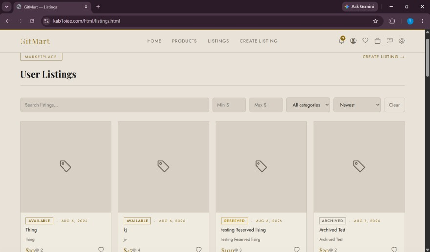

01 / Full-stack marketplace

GitMart
A marketplace built around reliable reservations.
A full-stack application for listing items and managing buyer reservations. I led the team and built the reservation workflow, with particular care for what happens when requests compete.
- Used PostgreSQL transactions and row locking to keep reservation decisions and listing status consistent.
- Built registration, login and profiles with JWT authentication, plus listing features including owner-only editing, search, sorting and image uploads.
- Reviewed teammates’ pull requests and resolved merge conflicts to keep the main branch stable.
43 Unit tests17 Integration tests5 End-to-end tests